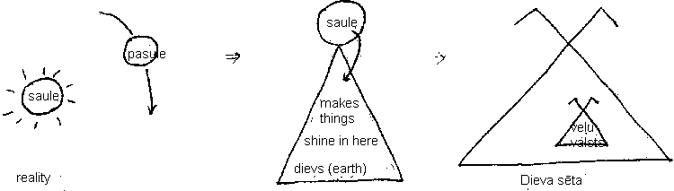
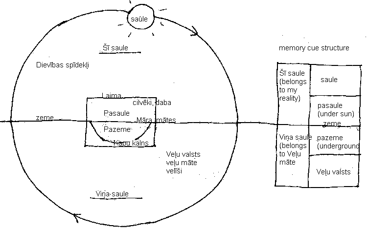

|
Cosmos
- Šī saule [this sun]
- Life here on earth as we understand and perceive it. „This sun” shines, turinig everything into colour.
- Viņa saule [their sun] Aizsaule [aiz – behind. Saule – sun]
- Life here on earth and in the universe as we cannot perceive it.
- „That sun” provides just enough light for outline shadows that are grey. No light, no colour. This is the realm we live in after our bodies die here on earth. It is called „veļu valsts” [their spirit. Country] and is inhabited by „veļi”, which are fused spirits of body, mind and dvēsele.
- Saule [sun]
- The sun we see in the sky
- Pasaule [pa-under. Saule-sun. Earth]
- Earth is located under the sun.
- Zeme [ground]
- Augumiņš [aug-grow. The growing thing.]
- Daba [nature] (dabiski- naturally)
- Ķermenis [body]
- Cilvēki [people]
- Pazeme [pa-under. zeme-ground]
- Kapu kalns [grave hill]
- People are buried underground (pazeme) in what is described as a hill. At certain points in history a grave hill was literally built virszemes [ontop of ground]
- Dievibas spīdekļi [god’s shining things] stars in sky that reflect laws of nature
- Laima – goddess of fate
- Māra – goddess of natural things on earth
- Mātes – goddesses of specific natural phenomenon on earth
- Veļu valsts – country of dead spirits
- Veļu māte – mother of dead spirits
- Velīši, dievietes – the dead spirits

Veļu valsts – is sēta without permeable borders
Dieva sēta - is sēta with permeable borders
To move in-out of veļu valsts, one has to change structure into a velis.

SSS2004 Home
|